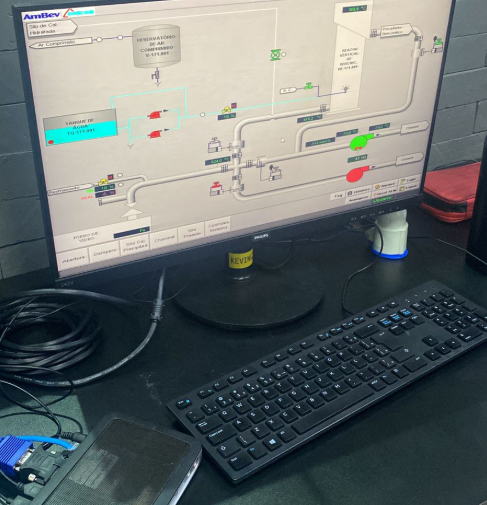
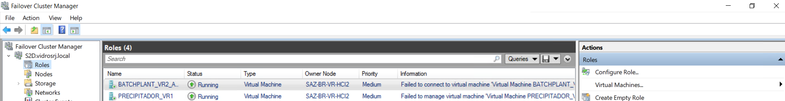
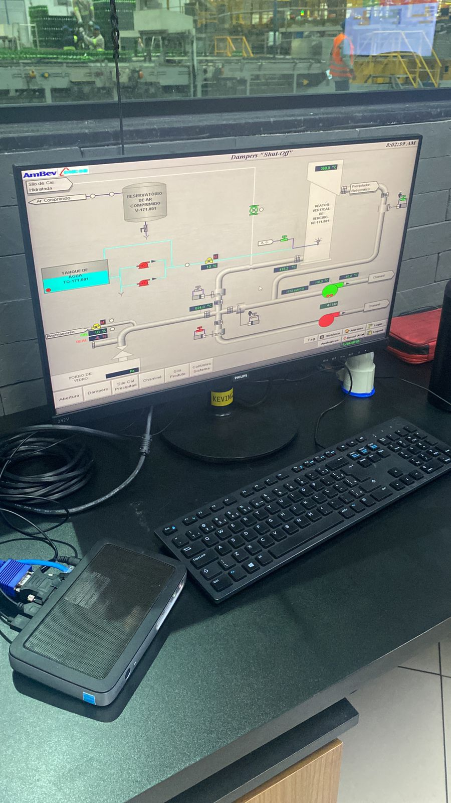

VIRTUALIZAÇÃO DE SUPERVISÓRIOS
A finalidade do projeto é virtualizar os sistemas supervisórios
e SCADA, implementar backups automáticos utilizando o Veeam e atualizar os sistemas legados.
Tecnologias Utilizadas
HCI
VEEAM
HYPER-V
DELL V10
Factory Talk
Informações do Projeto
Virtualização HCI com Hyper-V
Implementação de infraestrutura HCI com virtualização via Hyper-V para substituir sistemas supervisórios corrompidos sem backups.
Atualização de Sistemas
Migração dos sistemas supervisórios da versão FT 4 para FT 15, aproveitando a virtualização para modernização.
Backup Automatizado VEEAM
Implementação do VEEAM para backups automáticos, eliminando falhas humanas e garantindo proteção dos dados.
Reaproveitamento de Equipamentos
Utilização de Dell V10 (equipamentos que seriam descartados) para disponibilizar acesso RDP à equipe.
Problema Crítico Resolvido
Sistemas Supervisórios Corrompidos
Dois sistemas responsáveis pelo controle automático do processo foram corrompidos e não possuíam backups, criando uma situação crítica na área.
Falta de Infraestrutura de Backup
Ausência de sistema de backup robusto que pudesse restaurar os sistemas supervisórios em caso de falhas.
Economia e Impacto Financeiro
Economia vs Computadores Industriais
R$ 400.000
Em comparação com computadores industriais convencionais
Economia vs QCM1250
R$ 80.000
Considerando a alternativa com QCM1250
Redução de Custos com Software
Significativa
Atualizações de software para FT 15 com custos reduzidos
Benefícios Adicionais
Infraestrutura Robusta
Sistema mais confiável e resistente a falhas para automação
Eliminação de Falhas Humanas
Backups automáticos eliminam erros humanos no processo
Sustentabilidade
Reaproveitamento de equipamentos que seriam descartados
Modernização
Atualização de FT 4 para FT 15 com melhor performance
Galeria


